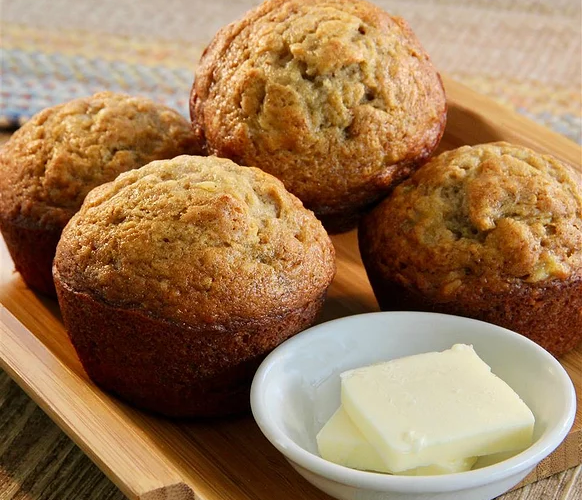

Ultimate Banana Muffins

Description:
My staple go-to recipe for overripe bananas! The key to
super moist muffins is to mix the batter until
only just combined, and not to over bake.
Ingredients
- 1 1/2 cups all-purpose flour
- 1 teaspoon baking powder
- 1 teaspoon baking soda
- 1 teaspoon ground cinnamon
- 1/2 teaspoon salt
- 1 dash ground nutmeg
- 3 very ripe bananas
- 1/2 cup white sugar
- 1/2 cup butter, melted
- 1/4 cup lightly packed brown sugar
- 1 egg
- 1 teaspoon vanilla extract
- 1/4 cup chopped walnuts (optional)
Steps
- Preheat oven to 350 degrees F (175 degrees C). Grease a muffin tin.
- Sift flour, baking powder, baking soda, cinnamon, salt,
and nutmeg together in a small bowl.
- Mash bananas in a large bowl. Mix in white sugar, melted butter, brown sugar,
egg, and vanilla extract. Fold in flour mixture until
just combined. Fold walnuts into the batter.
- Divide batter evenly among the muffin cups
- Bake in the preheated oven until a toothpick inserted into the center
comes out clean, about 20 minutes.